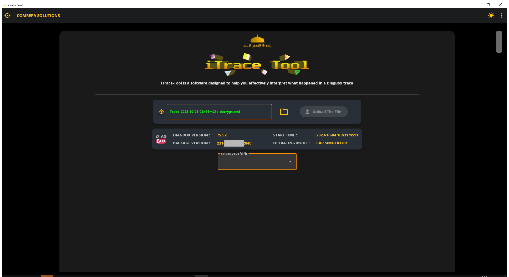
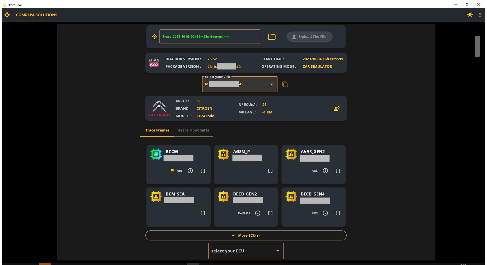
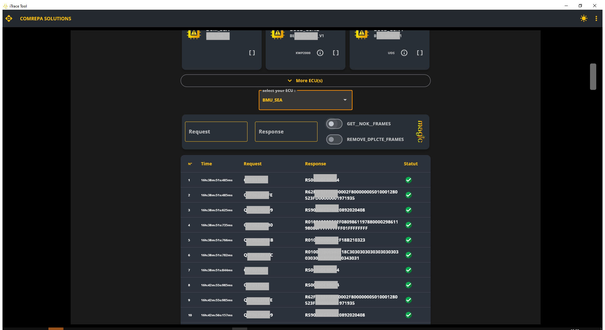
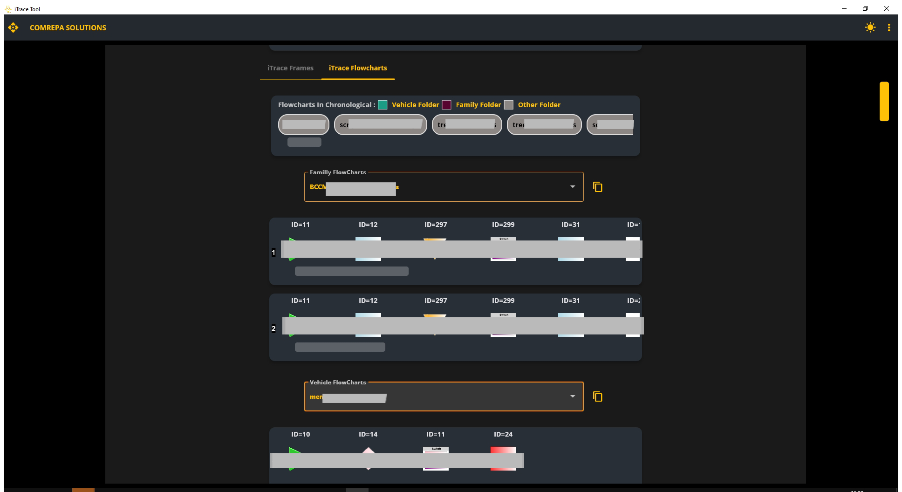
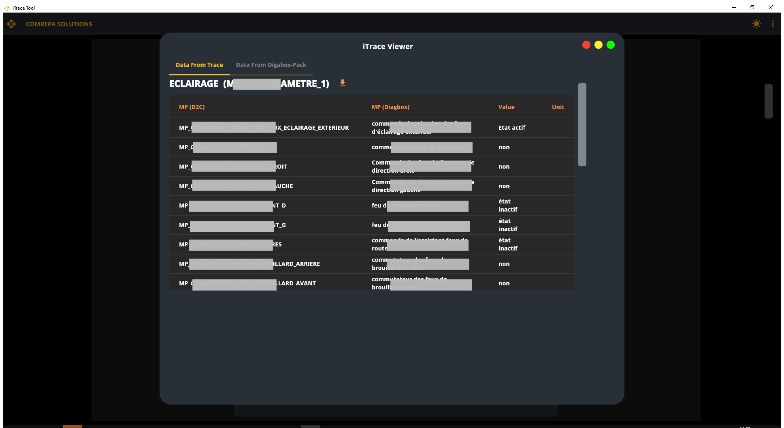
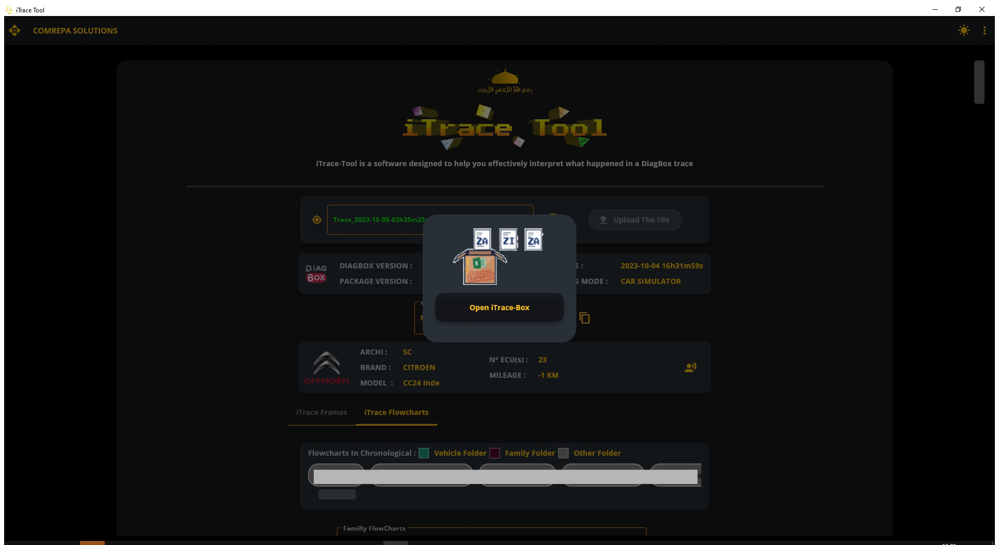
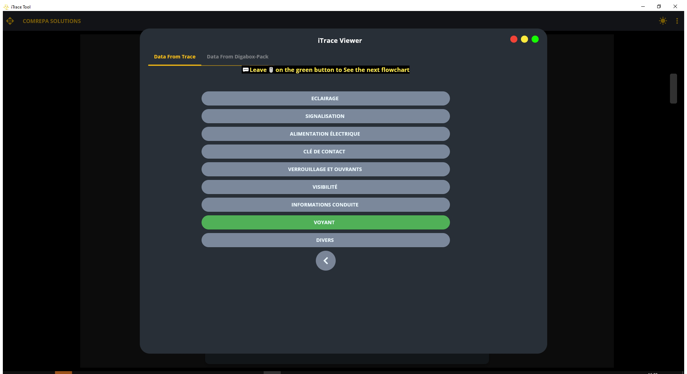

<div id="ajax-page" class="ajax-page-content">
    <div class="ajax-page-wrapper">
        <div class="ajax-page-nav">
            <!--            <div class="nav-item ajax-page-prev-next">-->
            <!--                <a class="ajax-page-load" href="../assets/portfolio-3.html"><i-->
            <!--                        class="lnr lnr-chevron-left"></i></a>-->
            <!--                <a class="ajax-page-load" href="../assets/portfolio-2.html"><i-->
            <!--                        class="lnr lnr-chevron-right"></i></a>-->
            <!--            </div>-->
            <div class="nav-item ajax-page-close-button">
                <a id="ajax-page-close-button" href="#"><i class="lnr lnr-cross"></i></a>
            </div>
        </div>
        <div class="ajax-page-title">
            <h2 style="line-height: 1.2;">Project : Trace-Tool is an application designed to assist You in effectively, interpreting and comprehending DiagBox traces</h2>
        </div>
        <div >
        <div >
            <div class="portfolio-block">
                <style>
                    * {box-sizing: border-box;}
                    body {font-family: Verdana, sans-serif;}
                    .mySlides1 {display: none;}
                    img {vertical-align: middle;}

                    /* Slideshow container */
                    .slideshow-container {
                        max-width: 350px;
                        position: relative;

                        margin: auto;
                    }

                    /* Caption text */
                    .text {
                        color: #04b4e0;

                        background-color: #111111;

                        text-align: center;
                    }

                    /* Number text (1/3 etc) */
                    .numbertext {
                        color: #f2f2f2;
                        font-size: 12px;
                        padding: 8px 12px;
                        position: absolute;
                        top: 0;
                    }

                    /* The dots/bullets/indicators */
                    .dot1 {
                        height: 15px;
                        width: 15px;
                        margin: 0 2px;
                        background-color: #c4c4c4;
                        border-radius: 50%;
                        display: inline-block;
                        transition: background-color 0.6s ease;
                    }

                    .active1 {
                        background-color: #04b4e0;
                    }

                    /* Fading animation */
                    .fade {
                        -webkit-animation-name: fade;
                        -webkit-animation-duration: 1.5s;
                        animation-name: fade;
                        animation-duration: 1.5s;
                    }

                    @-webkit-keyframes fade {
                        from {opacity: .4}
                        to {opacity: 1}
                    }

                    @keyframes fade {
                        from {opacity: .4}
                        to {opacity: 1}
                    }

                    /* On smaller screens, decrease text size */
                    @media only screen and (max-width: 300px) {
                        .text {font-size: 11px}
                    }
                </style>


                <h4 style="padding-bottom: 40px; color: #04b4e0">TOOLS : PYTHON ; XML ; EXCEL</h4>

           
        
           

           
                <!--***********************************************-->
            </div>
            <div class="portfolio-block">
               
                
                
                
                
                
                
                

                <!-- Project Description -->
            </div>
        </div>
        </div>
    </div>
</div>